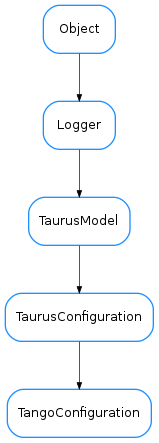

TangoConfiguration¶

-
class
TangoConfiguration(name, parent, storeCallback=None)[source]¶ Bases:
taurus.core.taurusconfiguration.TaurusConfiguration-
addListener(listener)[source]¶ Add a TaurusListener object in the listeners list. If the listener is already registered nothing happens.
-
encode(value)[source]¶ Translates the given value into a tango compatible value according to the attribute data type value must be a valid
-
getValueObj(cache=True)[source]¶ Returns the current configuration for the attribute. if cache is set to True (default) and the the configuration has events active then it will return the local cached value. Otherwise it will read from the tango layer.
-